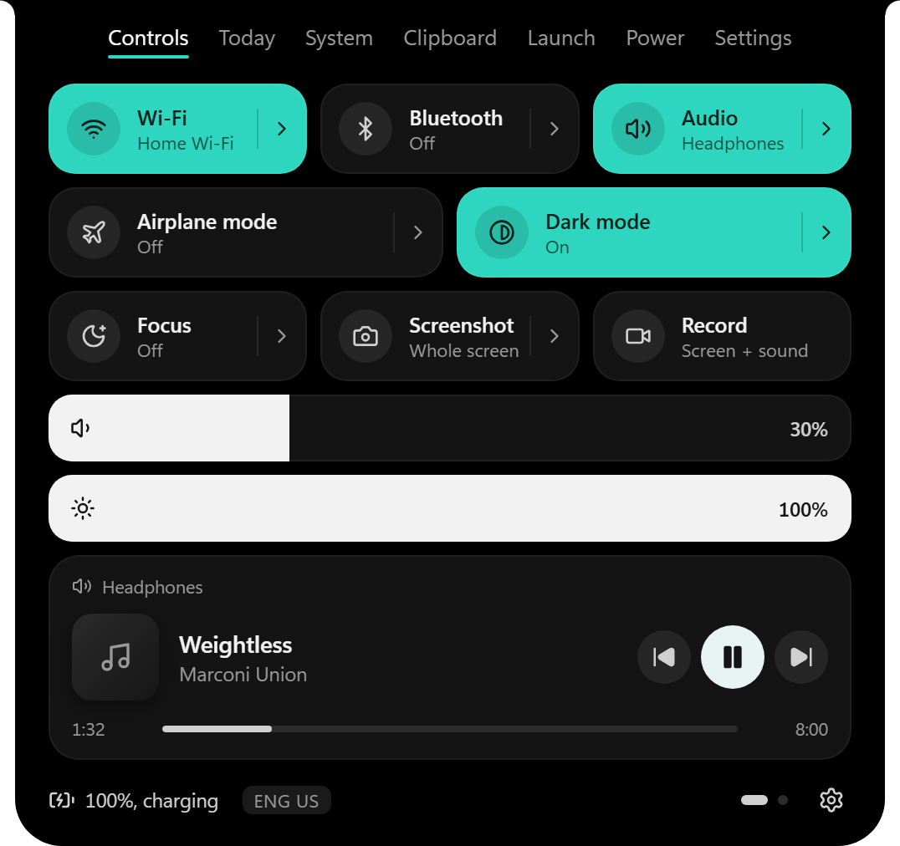

Controls
- Wi-Fi and Bluetooth on and off, with lists of nearby networks and paired devices.
- Volume and brightness bars that drag like an iPhone, plus volume per app.
- Focus silences notifications for an hour, until 6 PM, until 7 AM, or until you turn it off.
- Screenshot the whole screen or snip a part. Record the screen with its sound.
- Now playing from Spotify, your browser and other players, with seeking and optional synced lyrics.
- Airplane mode, Dark mode, and Windows' Project chooser.